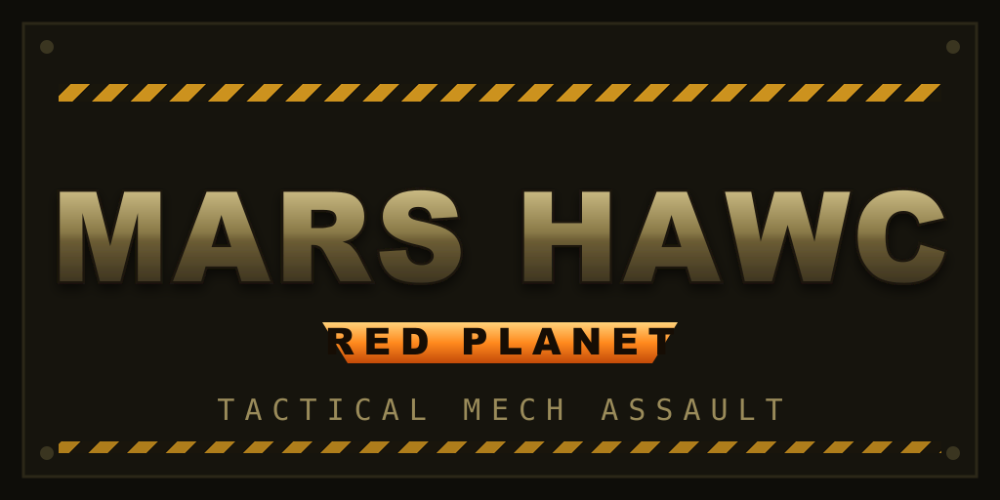
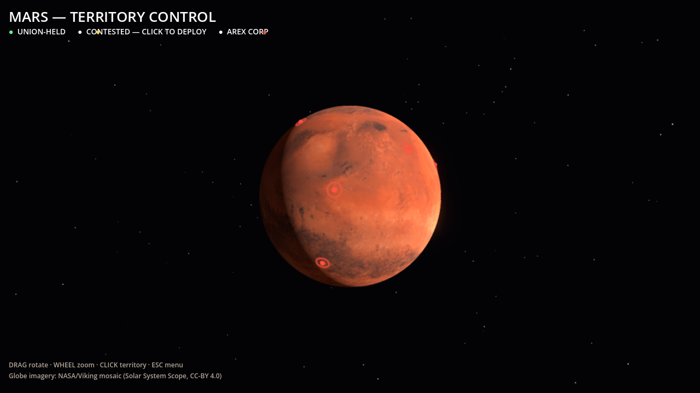
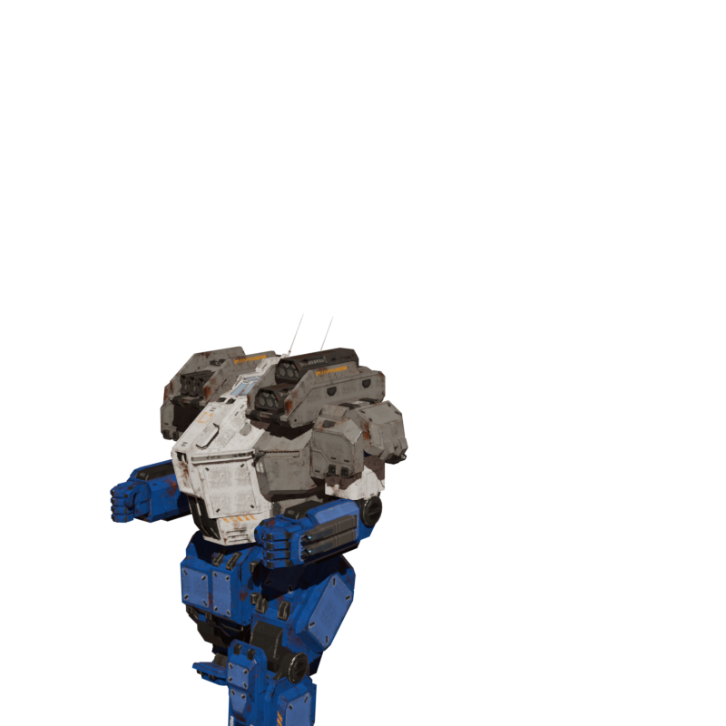
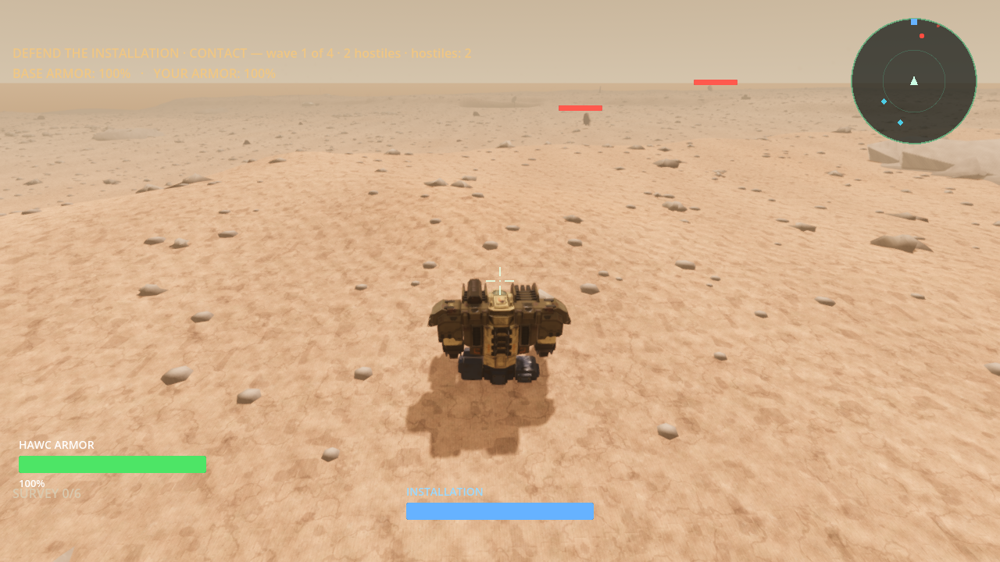
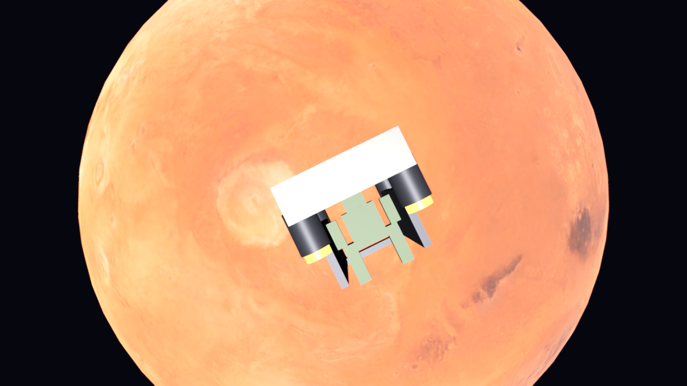
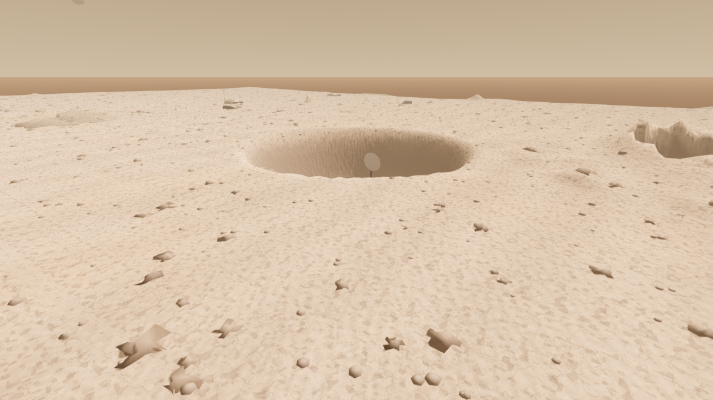

A tactical mech-assault game, spiritual successor to the 1997 mech sim G-Nome — rebuilt on the real Mars surface.
Drive a walking combat mech across genuine ~1 m/px HiRISE Martian terrain. Third-person, momentum-based, GTA-style movement.
The pilot is the persistent entity — eject from a dying mech, fight on foot, and steal an enemy machine. (Loop in progress.)
Defend your installation against waves of rival-faction HAWCs. Three engines drive Environment, your HAWC, and the enemy story.
Day/night cycle, calibrated atmosphere, scanned regolith and rocks — the realism bar is set against actual NASA rover photos.
This is the game as it actually runs today — honest, rough edges and all.
A complete vertical slice loop you can play start to finish.
Rotate the real planet, pick a contested territory, deploy.
A mothership releases your drop-ship, which burns down to the chosen territory.
WASD + jump, mouse aim, health/shield bars, minimap radar, wave-defense combat.

The player mech is now a real ~7 m rigged combat walker — cockpit, twin missile pods, gun-arm, reverse-jointed legs, weathered armor. It carries 41 animations (walk, run, jump, hit, melee).
~50× lighter than the old placeholder it replaced (243 MB → ~10 MB), with a proper HAWC silhouette. Union-tinted so it reads distinct from enemy mechs.



Honest note: work-in-progress. The player HAWC was just rebuilt (a real ~7 m rigged mech, down from a 243 MB placeholder); terrain atmosphere and the enemy roster are next.
The game is broken into phases. Guiding rule: make one mech feel great → prove one full mission → then scale. The 20-mission campaign is the destination, not the next step.
Real Mars terrain (HiRISE), day/night cycle, three-engine architecture, playable menu→mission→win/lose loop, strategic globe, orbital arrival. Done.
Player HAWC rebuilt: a real ~7 m rigged combat mech (cockpit, missile pods, gun-arm, reverse-jointed legs) with 41 animations — replacing the 243 MB placeholder. ~50× smaller, proper silhouette. Camera tightened around it. Polish/materials still to come.
Break the world into real, art-directed elements: rocks & regolith, dust & wind, atmosphere & climate, sky & light, hazards, verified against NASA photos. Done so far: terrain colour re-sampled to real Perseverance ground, rock scatter densified to match rock-littered Mars.
One full tutorial mission that exercises the whole loop — drop in, fight, eject, steal an enemy HAWC, hold a wave. If this mission is great, the game is great.
Five distinct archetype silhouettes (Sentry / Tactical / Heavy / Support / Hover) × four faction tints. All five in-game; the Heavy is now a proper spider tank and the Hover a real hover tank (both freshly rebuilt). Per-vehicle detail still to come.
Modular base kit → named structures (Meson Tower, Shield Generator, Power Plant, the Citadel) for mission variety and destruction.
20 missions across 4 campaigns, one new idea per mission — the full arc, once the slice proves out.